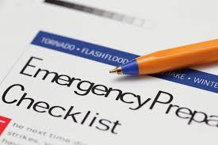

Emergency Preparedness
Know Your Site Procedures
It is important that you understand your site's emergency procedures and know the location of the evacuation assembly points. Assembly points will vary from different locations within a building and from site to site. It is therefore important to familiarise yourself with all emergency procedures relating to your building and prior to visiting any other site.
In the event of a bomb threat or the assembly point is unsafe, the Chief Warden may advise of an alternative assembly point. Information on the various site specific details can be found on NEO.